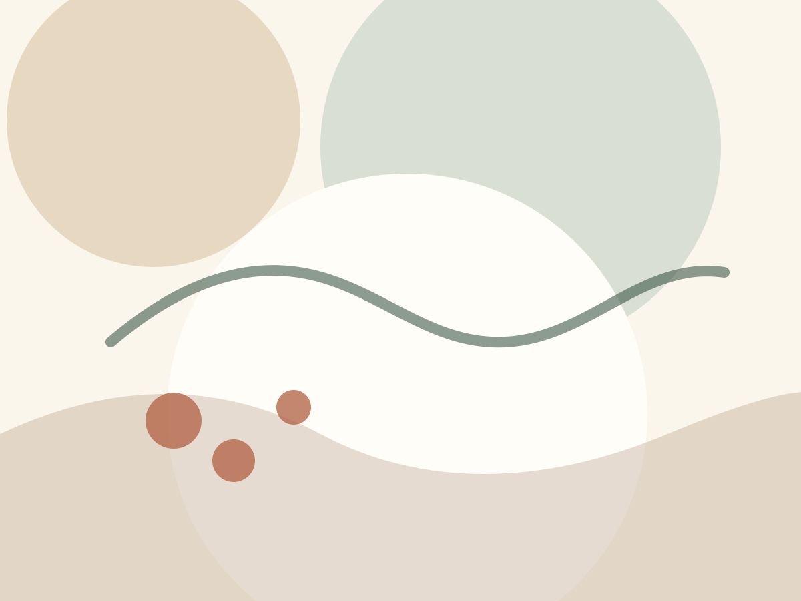
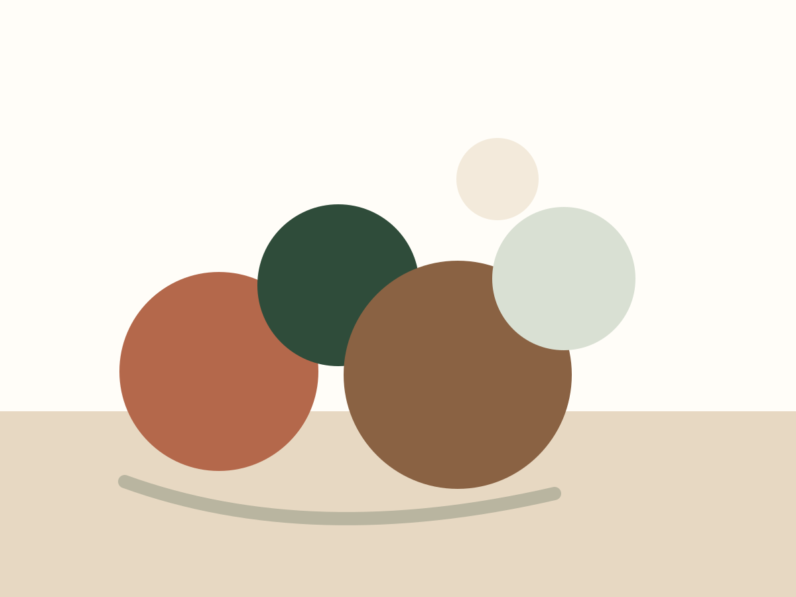
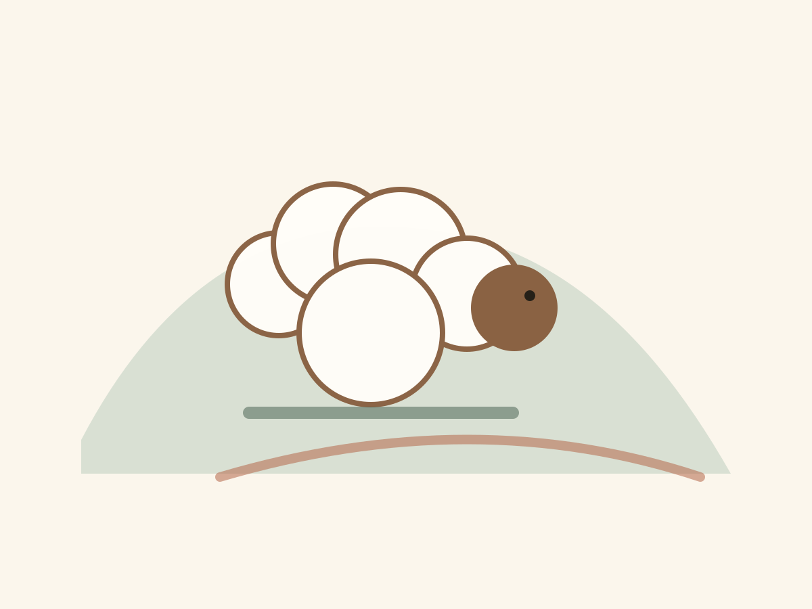
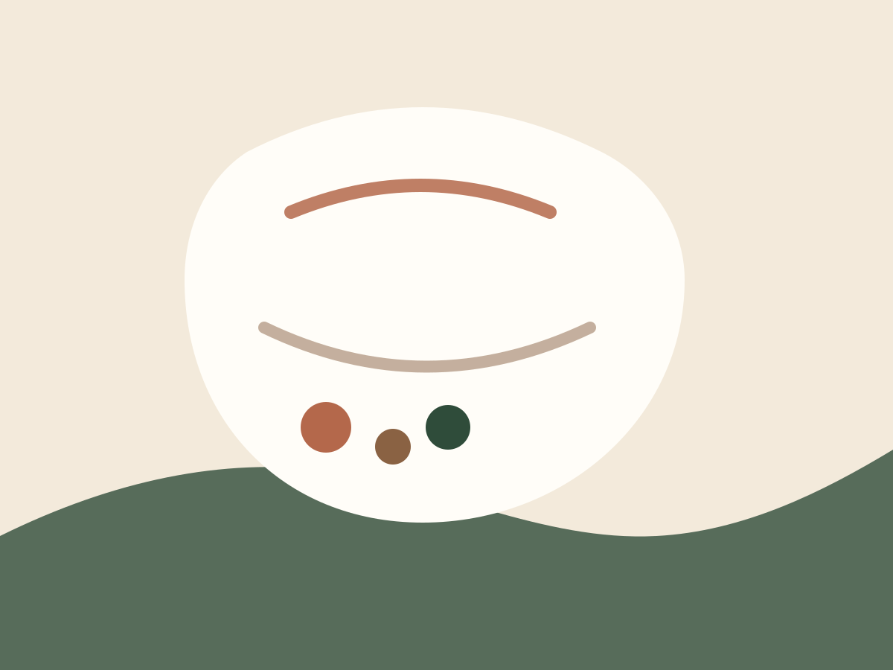

Willkommen
Schön bist du da.
Herzlich willkommen auf meiner Filzseite. Hier findest du Filzobjekte, Impressionen, Kugeln, Schafe und Informationen zu früheren Kursen.
Kommunikation
Filz verbindet Material und Menschen.
Filzen ist ein stilles, sinnliches Handwerk: Wolle, Wasser, Seife und Geduld werden Schritt für Schritt zu Formen, Figuren und Objekten. Bei Fragen zu Arbeiten, Kursen oder Erinnerungen an frühere Projekte freue ich mich über eine Nachricht.
Impressionen
Einblicke in Filz, Form und Wolle




Kugeln
Dekorative Objekte mit ruhiger Präsenz
Filzkugeln entstehen aus einfachen Fasern und werden durch Reibung, Wasser und Zeit zu festen, lebendigen Formen. Als kleine Objekte, Dekoration oder spielerische Farbakzente zeigen sie besonders schön, wie vielseitig Wolle sein kann.
Schafe
Die Inspiration beginnt bei der Wolle
Schafe und ihre Wolle sind der Ursprung vieler Arbeiten. Jede Faser bringt ihre eigene Haptik, Farbe und Geschichte mit. Daraus wachsen Figuren, Flächen und Objekte, die das Natürliche sichtbar lassen.
Kurse
Frühere Kurse und Begleitungen
- Kurs 1, Luzern 2013Grundlagen
- Kurs 2, Luzern 2014Kreative Objekte
- Kurs 3, Arni 2015Figürliches Filzen
- Kurs 4, Arni 2015Gigantische Objekte
- Betreuung einer Maturaarbeit2016
- Kurs 5, Arni 2016Grundlagen
- Kurs 6, Arni 2016Die Riesen sind da
Links
Weiterführendes
Kontakt
Liz Keller
Fragen, Erinnerungen oder Interesse an Filzarbeiten?